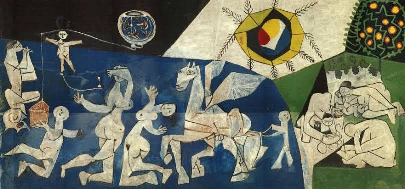

Dans la série "Les vents contraires"
N°10. La guerre et la paix
La guerre ne commence pas toujours avec des bombes.
Parfois, elle naît dans un regard.
Une phrase mal lancée.
Un silence qui fait mal plus que mille cris.
Elle est partout :
dans les familles, les couples, les rues,
dans les têtes trop pleines
et les cœurs qu’on n’a jamais appris à écouter.
Elle détruit vite.
Elle ne demande pas ton avis.
Et pourtant, même au milieu des ruines,
on entend un chant.
Quelque chose d’infiniment doux,
comme une promesse minuscule.
La paix, elle, prend son temps.
Elle ne fait pas de bruit.
Elle ne cherche pas à gagner.
Elle essaie juste de réparer,
comme on recoud un vêtement qu’on aime trop pour jeter.
Elle n’efface pas le passé.
Elle le tient dans ses bras
et lui murmure : « On peut continuer. »
La guerre montre les muscles.
La paix, elle, montre le cœur.
Djamel Metref
At Yenni le 14 août 2025

← Tous les poèmes